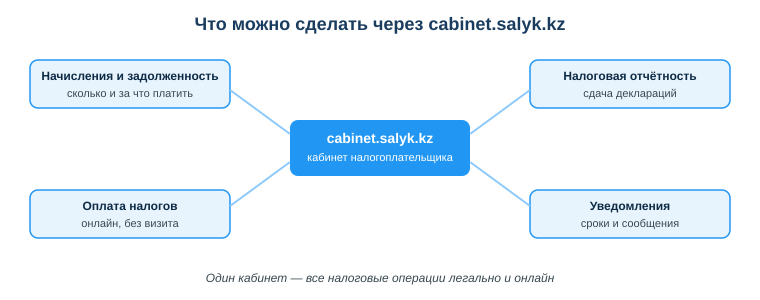

Дисциплина: Применение информационно-коммуникационных и цифровых технологий
Результат обучения: РО 2.2 — использование услуг веб-порталов и цифровых сервисов · Объём темы: 2 часа
Квалификация: 4S06130105 «Техник информационных систем»
Типичная история. Ты учишься, а по вечерам берёшь заказы на фрилансе: лендинги, небольшие боты, чинишь чужой код. Первые клиенты — знакомые и частные лица, деньги переводят прямо на карту, все довольны. Кажется, что так можно и дальше, без всяких «оформлений».
А потом пишет заказчик другого калибра — компания. Бюджет в несколько раз больше обычного, платить готовы. И тут стена: бухгалтерия компании не может «перевести деньги на карту физлица». Им нужны договор, счёт на оплату и акт выполненных работ — «закрывающие документы». Без них компания не имеет права провести платёж: это расход, который не на что списать, и проверка спросит «за что отдали деньги неизвестному человеку?». Таких документов ты дать не можешь — у тебя нет легального статуса. Хороший заказ срывается не потому, что ты плохо кодишь, а потому, что ты не оформлен.
Эта тема — про то, как перестать терять такие заказы. Чтобы работать на себя легально и брать серьёзные проекты, нужно разобраться в базовых цифровых сервисах для бизнеса Казахстана: как онлайн зарегистрировать индивидуального предпринимателя (ИП) и как вести налоги через кабинет налогоплательщика на портале cabinet.salyk.kz. Хорошая новость: в РК всё это делается онлайн, через официальные порталы, с подтверждением электронной цифровой подписью (ЭЦП), и занимает не дни беготни по кабинетам, а минуты за компьютером [4; 6].
Не отмахивайся в стиле «бухгалтерия — не моё дело, я техник ИС». Для айтишника умение быстро оформить статус и вести налоги онлайн — такая же часть профессиональной самостоятельности, как развернуть проект, поднять сервер или работать с git. Фриланс, собственный продукт, подряды, удалённая работа на зарубежного клиента — всё это формы самозанятости, где ты сам себе и исполнитель, и бухгалтер. Чем увереннее ты владеешь этими сервисами, тем больше серьёзных заказов можешь брать и тем спокойнее спишь, зная, что за спиной нет скрытого долга перед государством.
После изучения темы ты сможешь:
Пока заказчики — частные лица и суммы небольшие, неоформленная работа кажется удобной и бесплатной. Но у неё есть три потолка, в которые ты упрёшься, как только захочешь расти.
Первое — корпоративные клиенты для тебя закрыты. Компания, ТОО, госучреждение не могут законно заплатить «физлицу на карту» за услугу без договора: у их бухгалтерии каждый расход должен быть подтверждён документом. Нет договора, счёта и акта — нет легального способа перевести тебе деньги. А корпоративные заказы обычно крупнее и стабильнее частных: не один лендинг, а сайт, потом доработки, потом поддержка. Без статуса ты отрезаешь себя от самого денежного и предсказуемого сегмента рынка.
Второе — у тебя нет правовой защиты. Без договора ты беззащитен в спорной ситуации: заказчик не заплатил, передумал на полпути, требует бесконечных переделок — а у тебя нет ни одного документа, на который можно опереться. Договор, который вправе заключить ИП, фиксирует объём работ, сроки, сумму и что считается выполненной работой. Это защищает обе стороны. Первый же кинувший тебя заказчик стоит дороже, чем все налоги за год.
Третье — это риск перед государством. Систематическое получение дохода без регистрации — это незаконная предпринимательская деятельность. Пока обороты копеечные, на это обычно не смотрят. Но когда поступления на карту становятся заметными и регулярными, возникает реальный риск претензий налоговых органов — а банки давно передают данные о движении по счетам. Легальный статус этот риск снимает: платишь небольшой налог по специальному режиму и спишь спокойно.
А что даёт оформление взамен? Доступ к договорам и корпоративным клиентам, право выставлять счета и давать закрывающие документы, специальные (сниженные) налоговые режимы для малого бизнеса, а в перспективе — доступ к мерам господдержки предпринимательства. Связь с профессией прямая: техник ИС всё чаще работает именно как ИП — сопровождает АИС по договору, настраивает и поддерживает рабочие места, берёт подряды, помогает пользователям.
Разведём два слова, которые новички путают. ИП — это не отдельная компания, а статус самого физлица, которое получает право вести бизнес. Ты остаёшься собой, просто теперь тебе можно то, чего нельзя обычному физлицу. Это отличает ИП от ТОО (товарищества с ограниченной ответственностью) — отдельного юридического лица со своим уставным капиталом, отдельной бухгалтерией и более сложной отчётностью.
По-бытовому: ТОО — как открыть отдельную фирму (возможностей больше, но и бюрократии в разы больше, бухгалтер почти обязателен и стоит денег каждый месяц); ИП — как получить «лицензию работать на себя» (проще зарегистрировать, вести и закрыть). Для одиночного техника ИС или для двух-трёх человек над общим продуктом ИП почти всегда — оптимальный старт. К ТОО переходят позже и осознанно: когда бизнес вырос, появились наёмные сотрудники, инвесторы или крупный контрагент говорит «мы работаем только с юрлицами».
Почему ИП удобен айтишнику:
Честная обратная сторона: ИП отвечает по своим обязательствам личным имуществом (в отличие от участника ТОО, чья ответственность в общем случае ограничена вкладом). Для техника ИС, который оказывает услуги и не берёт крупных кредитов «на бизнес», этот риск на практике невелик — ты не закупаешь товар на склад и не арендуешь цех. Но знать про эту особенность нужно, если однажды решишь взять большой бизнес-кредит под ИП.
Без ЭЦП онлайн-регистрация в принципе невозможна. Подробно её устройство ты разбираешь в занятии 15, поэтому здесь — суть в контексте налоговых сервисов.
ЭЦП — это твой личный набор криптографических ключей для подписания электронных документов. По закону РК «Об электронном документе и электронной цифровой подписи» от 07.01.2003 № 370-II документ, подписанный действительной ЭЦП, юридически равнозначен бумажному документу с собственноручной подписью и печатью [5]. Не «почти как», а именно равнозначен. Поэтому заявление на регистрацию ИП, поданное онлайн и подписанное твоей ЭЦП, имеет полную юридическую силу — идти и подписывать ручкой ничего не нужно.
Технически ЭЦП в Казахстане выдаёт Национальный удостоверяющий центр (НУЦ РК), а чтобы пользоваться ключами на компьютере, ставят программу NCALayer — посредник между сайтом госуслуги и твоими ключами (в файле или на защищённом носителе). Когда портал просит «подписать заявление ЭЦП», открывается окно NCALayer, ты выбираешь нужный ключ (для физлица — обычно с префиксом AUTH или RSA), вводишь пароль к хранилищу — и подпись формируется. После второго-третьего раза это делается на автомате.
Посмотри на схему «Регистрация ИП онлайн: шаги» (приложение А): четыре блока — вход, заявление, подпись ЭЦП и зелёный блок «Готово». Зелёный цвет последнего блока означает успешный, завершённый результат — ИП зарегистрирован. Разберём каждый шаг, как будто ты сидишь за компьютером и делаешь это по-настоящему.
Шаг 0. Подготовься заранее (до входа на портал). Половина «зависаний» новичков случается не в форме, а из-за того, что под рукой чего-то не оказалось. Заранее проверь и подготовь:
Шаг 1. Вход на официальный портал. Регистрация доступна через портал электронного правительства eGov.kz (раздел услуг для бизнеса) либо через кабинет налогоплательщика cabinet.salyk.kz. Первое железное правило: заходи только на эти официальные адреса — набирай адрес руками или переходи из проверенного официального источника, но не по ссылке из объявления, письма или мессенджера. Авторизуешься на портале с помощью ЭЦП (через NCALayer) — это само по себе подтверждает, что вход выполняешь именно ты.
Шаг 2. Заполнение заявления. Открываешь услугу «Регистрация индивидуального предпринимателя» (на eGov формулировка может звучать как уведомление о начале деятельности в качестве ИП — это оно). В форме указываешь:
Часть полей (ФИО, ИИН) подтягивается автоматически из государственных баз по твоей ЭЦП: меньше ручного ввода, меньше опечаток, меньше поводов для отказа. Не спеши: вид деятельности и режим реально влияют на твою дальнейшую жизнь.
Шаг 3. Подтверждение личности подписью ЭЦП. Форма заполнена — подписываешь заявление своей ЭЦП. Снова открывается NCALayer, выбираешь ключ, вводишь пароль — подпись формируется. Именно этот шаг подтверждает личность и придаёт заявлению юридическую силу [5]. Если что-то не срабатывает — в девяти случаях из десяти виноват незапущенный NCALayer или просроченный ключ, а не «портал сломался».
Шаг 4. Результат — ИП зарегистрирован. После подписания заявление уходит в обработку. Важный момент: регистрация ИП в РК носит уведомительный характер. Ты не «просишь разрешения», которое рассматривают месяц, — ты уведомляешь государство о начале деятельности. Поэтому результат приходит быстро: обычно в течение одного рабочего дня, часто — в тот же день, иногда через минуты. Подтверждение — электронный документ о регистрации (талон/уведомление) в личном кабинете. С этого момента ты официальный ИП: можешь заключать договоры, выставлять счета и давать закрывающие документы.
После регистрации твоей главной рабочей точкой по налогам становится кабинет налогоплательщика — cabinet.salyk.kz. Это официальный личный кабинет на портале Комитета государственных доходов Министерства финансов РК (КГД МФ РК). Идея простая: собрать все налоговые операции в одном месте, чтобы решать их онлайн — без походов в налоговую и очередей.
Посмотри на схему «Что можно сделать через cabinet.salyk.kz» (приложение Б): в центре — сам кабинет, вокруг — четыре основные группы услуг.

1. Начисления и задолженность. В кабинете видно, сколько и за что нужно заплатить, есть задолженность или нет. Это твоя «приборная панель»: зашёл — и сразу понятно состояние обязательств. Заглядывай сюда регулярно, а не раз в год, чтобы не накопить долг по невнимательности.
Пример: перед заявкой на тендер или кредит у тебя попросят справку об отсутствии налоговой задолженности. Держа раздел под контролем, ты видишь состояние заранее и успеваешь погасить долг до того, как он сорвёт сделку.
2. Налоговая отчётность. Через кабинет сдаются декларации, которые ИП обязан подавать. Для специального режима на основе упрощённой декларации это форма 910.00, которую сдают раз в полугодие. Запомни название и периодичность — их спрашивают чаще всего. Форму заполняешь прямо в кабинете (или загружаешь заранее подготовленную), подписываешь ЭЦП и отправляешь. Кабинет проверяет формат и фиксирует факт сдачи — остаётся электронное подтверждение.
Пример: за первое полугодие ты заработал на заказах определённую сумму. До установленного срока заходишь в кабинет, заполняешь 910.00, указываешь доход, кабинет помогает с расчётом, подписываешь и сдаёшь — отчётность за полугодие закрыта.
3. Оплата налогов. Рассчитанные налоги и взносы оплачиваешь онлайн прямо из кабинета или через интегрированные платёжные сервисы — без визита в банк. После оплаты начисление гасится, и это сразу отражается в разделе задолженности.
Пример: сдал декларацию, увидел сумму к уплате, оплатил онлайн — весь цикл «посчитал → отчитался → заплатил» за один сеанс, не вставая из-за компьютера.
4. Уведомления и сроки. Кабинет показывает уведомления налоговых органов и напоминает о приближающихся сроках сдачи и уплаты. Это защита от самой частой беды самозанятых — «забыл про срок». Пропущенный срок — это уже пеня и штрафы, а вовремя увиденное уведомление стоит ноль тенге и минуту внимания.
Дополнительно через кабинет можно получать справки (например, об отсутствии задолженности), смотреть историю операций, приостанавливать или прекращать деятельность ИП. Портал salyk.kz и приложения КГД постоянно развиваются, набор услуг расширяется, поэтому пункты меню со временем меняются — логика при этом прежняя: один кабинет — все налоговые операции легально и онлайн.
Чтобы вести налоги осознанно, держи в голове две вещи: какой у тебя режим и какие у тебя обязанности.
Налоговый режим — это правила, по которым считается твой налог. Упрощённо для малого бизнеса в РК есть два основных пути:
Для техника ИС на фрилансе, у которого «расходов на бизнес» почти нет (основной актив — навыки и ноутбук, а не склад товара), упрощённая декларация обычно и удобнее, и выгоднее. Есть и ещё более лёгкий формат — специальный налоговый режим с использованием специального мобильного приложения (для самых малых оборотов, отчётность там фактически автоматическая, всё в телефоне). Какой режим выбрать — зависит от оборотов и планов; конкретные ставки и пороги периодически меняются, поэтому сверяйся с актуальными данными на kgd.gov.kz и в Налоговом кодексе РК [3].
Базовые обязанности ИП (общая логика, без привязки к меняющимся цифрам):
Главная мысль: быть ИП — это не только «получить красивый статус», но и регулярно крутить цикл «учёт дохода → отчётность → уплата». Кабинет salyk.kz делает этот цикл простым, но ответственность за своевременность лежит на тебе, а не на кабинете.
Там, где крутятся деньги и совершаются юридически значимые действия, всегда появляются мошенники. Разберём типичные ловушки, чтобы ты знал их в лицо заранее.
Общий принцип безопасности тот же, что проходит через весь курс: юридически значимые действия совершай сам, через официальные порталы, своей ЭЦП, которую не передаёшь никому. Если предлагают «быстро, дёшево и через посредника, которому нужен твой ключ» — это ловушка.
Современный техник ИС всё чаще зарабатывает не только зарплатой в найме, но и как самозанятый — и в каждом сценарии навыки этой темы работают на тебя.
Фриланс-услуги. Берёшь заказы (сайты, боты, доработки, сопровождение АИС, настройка и поддержка рабочих мест, помощь пользователям) у частных лиц и компаний. Статус ИП открывает корпоративных клиентов, даёт право заключать договоры, выставлять счета и давать акты. Налоги ведёшь через кабинет: раз в полугодие — декларация 910.00, оплата онлайн.
Собственный продукт (микро-SaaS, приложение, плагин). Делаешь свой продукт и продаёшь подписки или лицензии. Чтобы легально принимать оплату и расти, нужен и статус, и понимание налогов. ИП плюс упрощённый режим — удобный старт; когда обороты вырастут, можно перейти на ТОО (а в ИТ — присмотреться к модели Astana Hub на общем режиме, помня, что с упрощёнкой она не совмещается).
Подряд и аутстафф. Выполняешь работы для студии или компании как внешний исполнитель-ИП. Многие компании прямо предпочитают работать с техниками ИС именно как с ИП: для их бухгалтерии это удобнее, чем оформлять в штат, и всё закрывается договором и актами.
Работа с зарубежным клиентом. Оплата приходит из-за границы — здесь свои тонкости (налогообложение такого дохода и валютное законодательство). Это сложнее «внутреннего» фриланса, при росте оборотов имеет смысл свериться с актуальными правилами и проконсультироваться со специалистом. Но базовая логика та же: доход нужно учесть и с него отчитаться.
Во всех сценариях налоговые и бизнес-сервисы РК — не «лишняя бюрократия», а инфраструктура твоей самостоятельности. Тот, кто умеет ими пользоваться, становится самостоятельным исполнителем, которому доверяют серьёзные заказы и бюджеты.
Пример 1 — сорвавшийся заказ. Студент-фрилансер получал оплату на личную карту и ничего не оформлял. Пришёл крупный корпоративный заказчик, запросил договор и закрывающие документы — сделка повисла.
Разбор: причина срыва — не качество кода, а отсутствие легального статуса; компания не может провести оплату физлицу без документов. Решение: зарегистрировать ИП онлайн через egov.kz или cabinet.salyk.kz (вход с ЭЦП → заявление с видом деятельности «ИТ/разработка ПО» и упрощённым режимом → подпись ЭЦП → подтверждение). Дальше студент заключает договор, выставляет счёт, даёт акт, а налоги ведёт через cabinet.salyk.kz. Тот же заказчик теперь платит без вопросов. Мораль: статус окупается с первого корпоративного заказа.
Пример 2 — опасный «помощник». Студент увидел объявление: «Зарегистрируем ИП за 5 минут, пришлите ключ ЭЦП и пароль», соблазнился формулировкой «быстро и без хлопот».
Разбор: классическая ловушка из раздела 4.7 (ловушка 1). Передав ключ и пароль, студент отдал право подписывать документы от своего имени: на него могут оформить чужие долги, кредиты и фиктивные сделки. Правильно: зарегистрировать ИП самому через официальный портал, подписав заявление своей ЭЦП, и никогда не передавать ключ и пароль. Помощь, требующая твоего ключа, — не помощь.
Пример 3 — забытая отчётность. Самозанятый техник ИС оформил ИП на упрощённой декларации, набрал заказов, а про сдачу формы 910.00 и уплату налога вспомнил с большим опозданием, когда прилетело уведомление.
Разбор: пропуск срока ведёт к пене и штрафам и может закрыть доступ к справкам об отсутствии задолженности (а они нужны для тендеров и кредитов — то есть бьёт по будущим заказам). А защита была под рукой: раздел «Уведомления» в cabinet.salyk.kz заранее напоминает о сроках, а цикл «заполнил декларацию → оплатил» делается онлайн за один присест. Вывод: статус ИП — это и регулярная дисциплина «учёт → отчётность → уплата».
Пример 4 — путаница «упрощёнка против Astana Hub». Начинающий ИТ-фрилансер прочитал в чате, что «айтишникам положены льготы Astana Hub», и решил, что раз он на упрощёнке, то эти льготы у него автоматически.
Разбор: неверное представление. Упрощённый режим (форма 910.00) и льготы Astana Hub — две разные, несовместимые вещи. Упрощёнка — про малый бизнес вообще, в том числе про ИП-фрилансера. Льготы Astana Hub — отдельный механизм для ИТ-компаний на общем режиме, вступивших в технопарк; с упрощёнкой они не сочетаются. Правильно: для начала оставаться на упрощёнке, а модель Astana Hub рассматривать позже, сверяя условия на astanahub.com и kgd.gov.kz.
Основная литература:
Дополнительно:
Нормативные источники РК:
Электронные ресурсы:
Международные рамки:
Приложение А. Схема «Регистрация ИП онлайн: шаги» — assets/17_shema-registraciya-ip.svg. Четыре блока слева направо: вход на портал (egov.kz/salyk.kz) → заявление (вид деятельности, режим) → подпись ЭЦП (подтверждение личности) → зелёный блок «Готово: ИП зарегистрирован». Зелёный цвет последнего блока означает успешный завершённый результат. Внизу — напоминание: только через официальные порталы и никогда не передавать ключ и пароль ЭЦП посредникам.
Приложение Б. Схема «Что можно сделать через cabinet.salyk.kz» — assets/17_shema-uslugi-cabinet-salyk.svg. В центре — кабинет налогоплательщика, вокруг — четыре услуги: начисления и задолженность (сколько и за что платить), налоговая отчётность (сдача деклараций), оплата налогов (онлайн, без визита), уведомления (сроки и сообщения). Идея схемы: один кабинет — все налоговые операции легально и онлайн.
Памятка студенту. Используй чек-лист из раздела 7 как пошаговую инструкцию при реальной регистрации ИП и настройке работы с налогами.
Материал подготовлен на основе урока темы (urok.md) и приведённых в конце источников; он расширяет и углубляет содержание урока для самостоятельного изучения. Источники приведены главами и ссылками (без номеров страниц); нормативные акты — с реквизитами. Конкретные налоговые ставки, пороги и условия льгот периодически меняются — всегда сверяйся с актуальными данными на kgd.gov.kz и в Налоговом кодексе РК.
Разработал: преподаватель ИКТ, магистр управления и информационной безопасности Калиаскаров Д.А.
Материал одобрен к использованию в обучении решением Педагогического совета ТОО «Колледж Хекслет Казахстан».